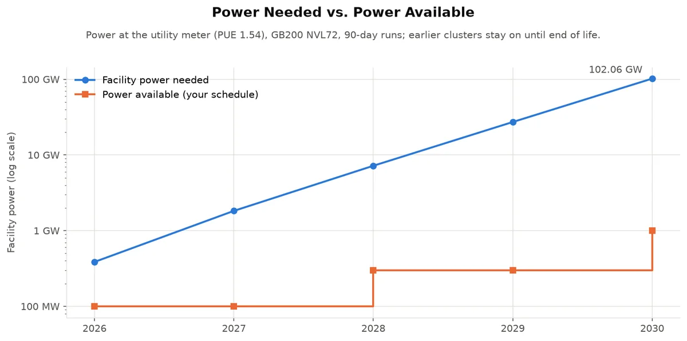
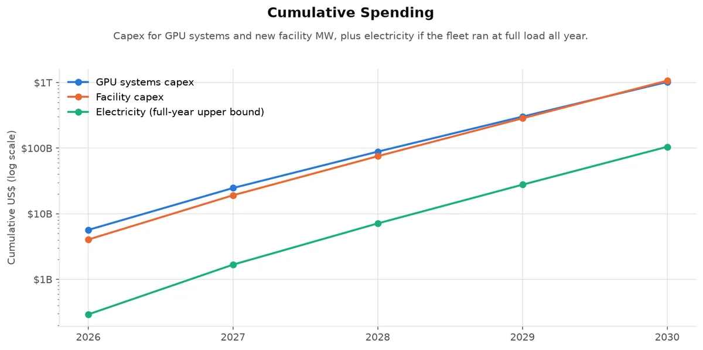
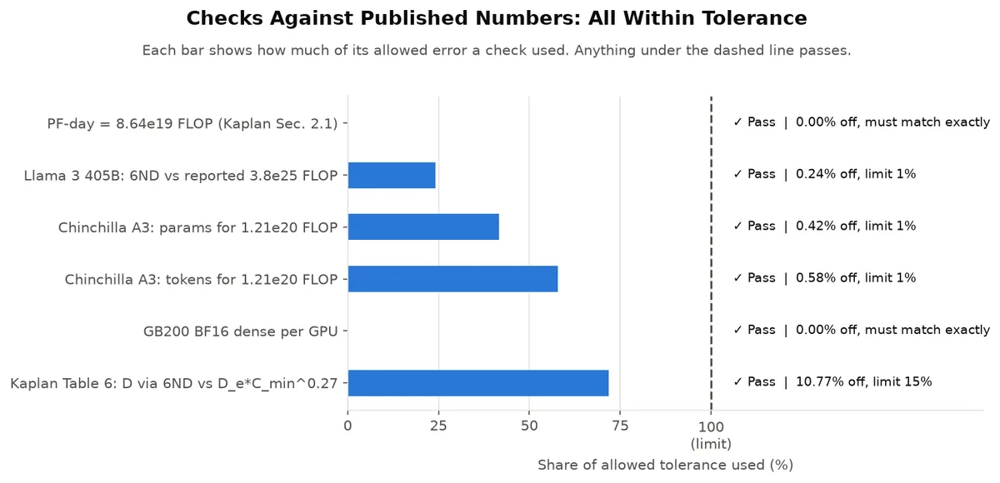

I build data pipelines and the dashboards on top of them. My projects pull from public APIs and datasets into BigQuery, model the data with dbt, and publish the results in Tableau and Power BI. I'm looking for data integration, analytics engineering, BI development, or implementation work.
My experience, skills, and certifications are on the Resume page.
Built hourly electricity baselines from 25M readings across ~1,600 buildings in the public Building Data Genome 2 dataset. A data-quality check flagged 362 buildings for meter issues and kept 1,089 reliable baselines. Run end to end with Python ingest, dbt models, and GitHub Actions, with the dashboard published in Tableau Public and rebuilt in Power BI.
Loads U.S. retail electricity price data from the EIA API into BigQuery with Python on a scheduled run. dbt models the data with a staging layer, a year-over-year price mart built with window functions, and tests. Dashboards in Tableau Public and Power BI sit on top of the mart.
Syncs issues from a public GitHub repository into BigQuery incrementally, so each run fetches only issues changed since the last load. Keeps an append-only history and a deduplicated current table, then models monthly opened, closed, and open-backlog counts with dbt. Pytest and dbt tests run before a daily GitHub Actions job.
How a daily run works
A Jupyter notebook that converts a planned AI training run into the accelerators, power, energy, and cost a data center planner has to line up. It then lays them out year by year against available power, showing when to file for grid interconnection and when to start construction. Built on published scaling-law research, with cited defaults and checks against the published numbers.

Power needed vs. available
Cumulative spending
Checks against published numbers